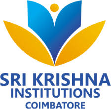
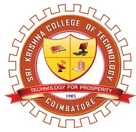

|  |
SRI KRISHNA COLLEGE OF TECHNOLOGY |

|
- ABOUT THE COLLEGE
Nestled at the foothills of the Western Ghats, located in a sprawling 52-acre campus in Kovaipudur, Coimbatore, Sri Krishna College of Technology (SKCT) is a vibrant institute of higher education established in 1985 promoted by Sri Krishna Institutions. An extraordinary freedom of opportunity to explore, to collaborate and to challenge oneself is the hallmark of the Institute. Being an autonomous institute, affiliated to Anna University, Chennai, and approved by AICTE, New Delhi, SKCT lays strong emphasis on collaborative research and stands apart from other institutes by its participatory work culture, student care programmes and high industry interaction. In a span of 38 years, it has emerged as one of the premier engineering colleges for learning, discovery and innovation due to the dynamic leadership of the Chairperson and Managing Trustee Smt S Malarvizhi. Being an acclaimed educationalist, she continues to contribute profusely for the glory and happiness of advancing generations. The college is accredited with A Grade by NAAC and eligible undergraduate programs are accredited by the National Board of Accreditation (NBA), New Delhi. The college offers 11 undergraduate programmes and 6 postgraduate programmes in Engineering, Technology, and Management Studies.
Vision
The department of CSE fosters a conducive ambience to meet the global standards by equipping the students with modern techniques in the area of Computer Science and relevant research to address the societal needs.
mission
1.To provide positive working environment that would help the students perform to their highest abilities in various fields of computer science.
2.To enable students and faculty with the best of technologies and knowledge emerging in the domain of Computer Science and Engineering.
3.To establish nationally and internationally recognized research centres and expose the students to broad research experience.